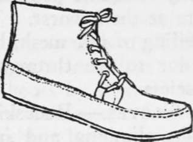

Clothing. Part 7
Description
This section is from the book "Camping And Woodcraft", by Horace Kephart. Also available from Amazon: Camping and Woodcraft.
Clothing. Part 7
Pacs without soles are fine in a canoe. In trout fishing they can be worn with a pair of hemp sandals to prevent slipping. In extremely cold weather the oil-tanned leather freezes as stiff as horn, and gets dangerously " slick".
Moccasins
In dry weather, on ground that is not too steep or stony, give me the velvety and pliant, pussy-footed moccasin, of real moose-hide, " smoke-tanned " so it will dry soft if I do get wet. I will see more that is worth seeing in the woods than anybody who wears shoes.
If your feet are too tender, at first, for moccasins, add insoles of good thick felt, or birch bark or the dried inner bark of red cedar. After a few days the feet will toughen, the tendons will learn to do their proper work without crutches, and you will be able to travel farther, faster, more noiselessly, and with less exertion, than in any kind of boots or shoes. This, too, in rough country. I have often gone tenderfooted from a year's office work and have traveled in moccasins for weeks, over flinty Ozark hills, through canebrakes, through cypress swamps where the sharp little immature " knees " are hidden under the needles, over unballasted railroad tracks at night, and in other rough places, and enjoyed nothing more than the lightness and ease of my footwear. After one's feet have become accustomed to this most rational of all covering they become almost like hands, feeling their way, and avoiding obstacles as though gifted with a special sense. They can bend freely. One can climb in moccasins as in nothing else. So long as they are dry, he can cross narrow logs like a cat, and pass in safety along treacherous slopes where thick-soled shoes might bring him swiftly to grief. Moccasined feet feel the dry sticks underneath, and glide softly over the telltales without cracking them. They do not stick fast in mud. One can swim with them as if he were barefoot. It is rarely indeed that one hears of a man spraining, his ankle when wearing the Indian footgear.
Moccasins should be of moose-hide, or, better still, of caribou. Elk-hide is the next choice. Deerskin is too thin, hard on the feet for that reason, and soon wears out. The hide should be Indian-tanned, and "honest Injun" at that — that is to say, not tanned with bark or chemicals, in which case (unless of caribou-hide) they would shrink and dry hard after a wetting, but made of the raw hide, its fibers thoroughly broken up by a plentiful expenditure of elbow-grease, the skin softened by rubbing into it the brains of the animal, and then smoked, so that it will dry without shrinking and can be made as pliable as before by a little rubbing in the hands. Moccasins to be used in a prickly-pear or cactus country must be soled with rawhide.
Ordinary moccasins, tanned by the above process (which properly is not tanning at all), are only pleasant to wear in dry weather. But they are always a great comfort in a canoe or around camp, and are almost indispensable for still-hunting or snow-shoeing. They weigh so little, take up so little room in the pack, and are so delightfully easy on the feet, that a pair should be in every camper's outfit. At night they are the best foot-warmers that one could wish, and they will be appreciated when one must get up and move about outside the tent.
In a mountainous region that is heavily timbered, moccasins are too slippery for use after the leaves fall.
Moccasins should be made over a regular shoe last (Fig. 99). Those commonly sold are too narrow at the toe. Remember that they will shrink some after getting wet, and that you must wear thick socks in them, or perhaps two pairs, so get them big enough.
Heavy men, tender-footed from town, enjoy moccasins best in a hammock. In fact, most city men will get on better in soled moccasins, but these should be pliable and of not over 1 1/2 pounds to the pair. Or canvas " sneakers" may be used. But beware the rubber soled variety. They are very hot, and will make your feet more tender than ever. Canvas with leather sole is cool and dries out quickly.
Either moccasins or sneakers are needed in camp to rest the feet, and to slip on at night if you stir out.
Headwear
For general use a soft felt hat, of good quality that will stand rain, is the best head covering. The rim should be just wide enough to shield the eyes from glare and the back of the neck from rain. I like a creased top, wearing it so until a hot sun beats down, then I push up the crown and have a good air space over my pate. The hat should have eyelets for ventilation. A strap or cord under one's " back hair," or chin if need be, holds the hat on in a wind.
Fig. 99. Soled Moccasir? (Made Over Last).
A stiff rim is suitable only for mounted men; in the woods it is a plaything for brush and low branches.
A flannel sweat-band absorbs perspiration instead of holding it back like a leather one. (The Jaeger stores have them in stock.) It also helps to hold the hat on. In attaching, do not sew through the hat but through the narrow band under original sweat-band, otherwise the hat will leak.
A cap is of no account in the rain, and its crown is too low to protect one's head from the sun rays.
Head Nets
A head net and gauntlets are the only adequate protection against insects when these are at their worst. The best net is of Brussels silk veiling of fine mesh, black, because that is the easiest color to See through. A net that tears easily is useless.
Gloves
Buckskin gloves are needed in mountain climbing and in a region where thorns and briers are common. Buy the regular army ones: they are real buck, and dry out soft. Cavalry gauntlets are better for horseback trips. By folding the hand of a gauntlet back against its cuff the latter serves as a drinking cup.
For " fly time" Dillon Wallace recommends " old loose kid gloves with the fingers cut off and farmer's satin elbow sleeves to fit under the wristbands of the outer shirt".
Continue to: